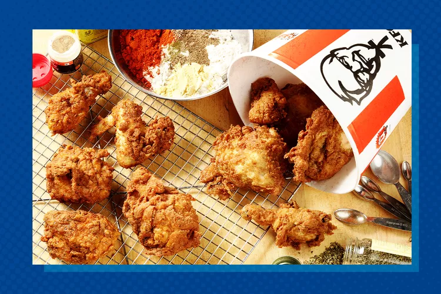

11 spices Nuggets!

KFC has been serving its world-famous fried chicken since 1930 — and using the same 11 herbs and spices since
1939 when Colonel Sanders perfected his recipe. Everyone knows that the Colonel's herb and spice mix is top
secret, but that won't stop us from trying to find out what's in it.
Even KFC's nutritional guide doesn't give anything away — the fried chicken ingredients simply include "Colonel's
Secret Original Recipe Seasoning." This all amounts to either a very clever marketing ploy or an impressive
feat.
Ingredients
- 2/3 teaspoon salt
- 1/2 teaspoon thyme
- 1/2 teaspoon basil
- 1/3 teaspoon oregano
- 1 teaspoon celery salt
- 1 teaspoon black pepper
- 1 teaspoon dried mustard
- 4 teaspoons paprika
- 2 teaspoons garlic salt
- 1 teaspoon ground ginger
- 3 teaspoons white pepper
Steps
- Mix the flour in a bowl with all the herbs and spices; set aside.
- Mix the buttermilk and egg together in a separate bowl until combined. Soak the chicken in the buttermilk
mixture at
room temperature, 20-30 minutes.
- Remove chicken from the buttermilk, allowing excess to drip off. Dip the chicken pieces in the
herb-spice-flour
mixture to coat all sides, shaking off excess. Allow to sit on a rack over a baking sheet, 20 minutes.
- Meanwhile, heat about 3 inches of the oil in a large Dutch oven (or similar heavy pot with high sides) over
medium-high heat to 350 degrees. Lower the heat to medium to maintain it at 350. Fry 3 or 4 pieces at a
time, being
careful not to crowd the pot. Fry until medium golden brown, turning once, 15-18 minutes. Transfer chicken
pieces to
a baking sheet covered with paper towels. Allow the oil to return to temperature before adding more chicken.
Repeat
with remaining chicken.